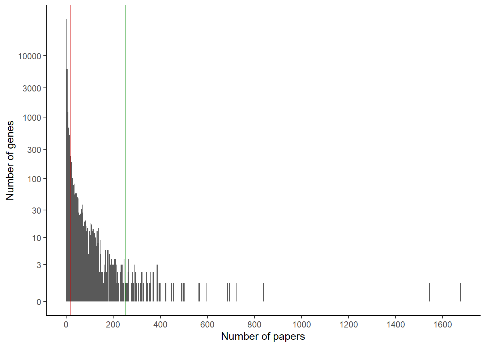

What genes are the most studied in worms? Wormbase’s comprehensive curation can help us answer that.
Data download
We want to find how many publications are associated with each gene. Wormbase offers us several tools to that effect, we will use SimpleMine which is the easiest here. Other possibilities include WormMine or the REST API.
In a browser, we open SimpleMine. For “Step 1”, we can simply select Caenorhabditis elegans, in “Step 2” we will “download results as a tab-delimited file”, in Step 3 we select “Wormbase Gene ID”, “Public Name”, “Expr_pattern Tissue” and “Reference”. And in Step 4 we download “all genes for this species”.
We can then download the data. We need a tool to process it, here, I will use R.
Data loading
The first step is to read the data into R, we also rename the columns for names that are easier to work with. And if you look through the data, you may notice a number of genes do not have references associated (marked as “N.A.”), we need to ensure this is registered correctly.
In this format, the references are all packed in a single long string. We can count how many there are by relying on the consistent format. We just need to handle the case of references being “NA”. R would interpret it as “some unknown number of references”, but we know this actually means “no reference”.
Alternatively, an approach that is less efficient here, but maybe more general, is to make it one row per reference and count the number of rows for a given gene.
Looking at the top genes, perhaps unsurprisingly, the 2 most studied genes in worms are daf-2 and daf-16. Then we see a lot more genes that also appear widely cited. Let’s look at the distribution to see if we can identify distinct categories.
ggplot(papers_per_gene) +geom_histogram(aes(x=nb_papers), bins =100, color ="white") +theme_classic() +scale_x_continuous(n.breaks =10) +scale_y_continuous(trans ="log1p", breaks =c(0,3,10,30,100,300,1000,3000,10000)) +xlab("Number of papers") +ylab("Number of genes")
So categories we could distinguish are:
genes with more than 250 papers, that appeared at the top of the list
genes with many papers (let’s take > 20)
genes with few or no papers
We can visualize these cutoffs on the histogram:
ggplot(papers_per_gene) +geom_histogram(aes(x=nb_papers), bins =500) +theme_classic() +scale_x_continuous(n.breaks =10) +scale_y_continuous(trans ="log1p", breaks =c(0,3,10,30,100,300,1000,3000,10000)) +xlab("Number of papers") +ylab("Number of genes") +geom_vline(aes(xintercept =20), color ="red3") +geom_vline(aes(xintercept =250), color ="green4")

It might help to visualize the x axis on a log scale:
ggplot(papers_per_gene) +geom_histogram(aes(x=nb_papers), bins =500) +theme_classic() +scale_x_continuous(trans ="log1p", breaks =c(0, 10, 20, 50, 100, 250, 1000)) +scale_y_continuous(trans ="log1p", breaks =c(0,3,10,30,100,300,1000,3000,10000)) +xlab("Number of papers") +ylab("Number of genes") +geom_vline(aes(xintercept =20), color ="red3") +geom_vline(aes(xintercept =250), color ="green4")
Looking at this graph, maybe a cutoff of 50 genes would be more appropriate than 20. But from domain knowledge, 50 seems too high a cutoff: would we really call a gene with 25 papers poorly studied?
We can look at the number of genes in each category:
Let’s say I’m more interested in neuronal genes that are highly studied. One way to implement such a restriction is to look at which tissue each gene is supposedly expressed in.
First, we are interested in most studied genes, but we only looked at the most cited genes. For example, unc-54 is highly cited, but that may be largely due to its use in transgenes.
Second, for annotating tissue types, we rely on the curated expression patterns from Wormbase. Another approach is to use the scRNA-Seq data now available to determine expression patterns. For example, I previously used a thresholding approach to identify neuronal genes, this annotation is available in the minipackage wormDatasets.
Finally, if we are interested in genes studied for their role in a given tissue (e.g. neurons), we would need a classification of the papers they’re cited in. Here, we rely on (sometimes imprecise) annotations of tissues where a gene is expressed. For example, daf-16 is expressed in neurons, and has been largely studied in all tissues, so it appears as the top hit; that does not necessarily mean it has been studied in neurons that much.